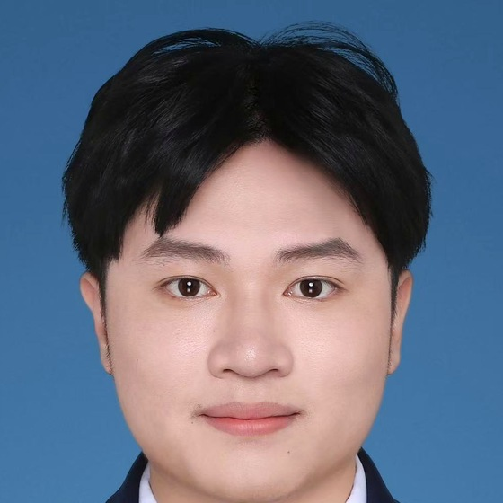

为什么二值权重能省掉乘法
从一个激活行出发，推导候选空间为什么是有界的，以及查表为什么比 XNOR + popcount 更省加法。
草稿，还没发我在一块 FPGA 上，把大模型的乘法换成了查表。
广东工业大学集成电路学院，硕士在读。做边缘端的超低位宽推理硬件。这不是简历——简历在邮件里，这里放我真正在想的东西。
那得等我写完第一篇文章。下面是关于我的一段话，比 10 秒版长一些，比 10 分钟版短很多。
不写通论，只写自己动手做过的那一小块。下面三篇还在写，写完一篇发一篇。
从一个激活行出发，推导候选空间为什么是有界的，以及查表为什么比 XNOR + popcount 更省加法。
草稿，还没发板子、时钟、功耗墙，以及那些在仿真里永远不会出现的问题。
计划，还没开始把论文里的假设逐条拆开，看哪一条在硬件上最贵。
计划，还没开始这里暂时没有已发布的文章，所以也没有日期。等第一篇写完，这一栏才有意义。
研究之外的东西：读到的、想到的、过日子的。写得比技术笔记松，也不必有用。
从一条加法路径讲到，为什么在硬件里「少做一点」有时比「做快一点」更让人安心。
想写，还没动笔都是在决定：什么该被抽象掉，什么必须留着看得见。
想写，还没动笔实验室的灯、示波器的风扇声，以及一个迟迟不收敛的时序。
想写，还没动笔这三件是打算写的小事，还没有一篇成文。第一篇写出来之后，这里会换成它的日期和开头。

卓文俊，广东工业大学集成电路学院硕士研究生。做芯片和模型交界处的事：把一个在 GPU 上理所当然的算子，重新想成一块板子上能省下来的加法。
BAPE 之前，大部分时间在写 RTL、跑综合、和时序报告较劲。现在把同一套数据流推到别的低位宽格式上。
照片是照相馆拍的证件照，唯一一张能用的。
写信给我比在社交平台留言更靠谱。涉及论文、数据流、能效的问题我都会回。